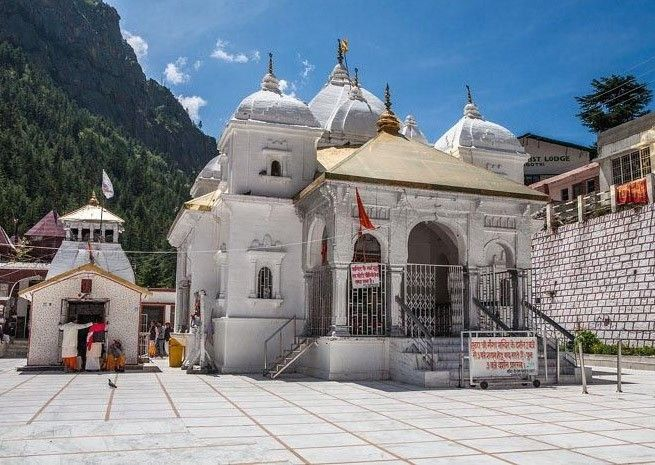
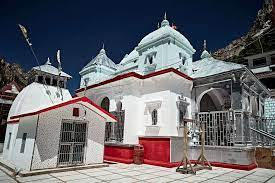
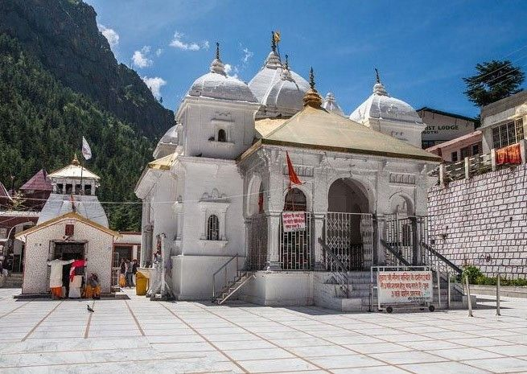
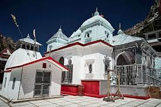

HISTORY OF GANGOTRI
Gangotri Dham is dedicated to Goddess Ganga, who is said to have
descended on earth to absolve the sins of human kind. The river
originates at Gaumukh from the Gangotri glacier which is some 18 km
from the town of Gangotri. Situated in Uttarkashi district of Uttarakhand,
the original temple of Gangotri was built by by Amar Singh Thapa, a Gurkha
general, in the early 19th century.
LEGEND
King Sagar undertook an Ashwamedha Yagna and sent his 60,000 sons along
with the horse. The horse was lost; tracing the horse to the Sage Kapila's
ashram, the 60,000 sons stormed the ashram and disturbed sage who was in
deep meditation. Enraged Kapila opened his fiery eyes that turned all 60,000
sons into ashes. Later, on Kapila's advice, Anshuman (Sagar's grandson)
started praying to Goddess Ganga, requesting her to come down to earth to
cleanse the ashes of his relatives and grant salvation to them. Anshuman
failed in his aim; it was his grandson Bhagirath whose rigorous meditation
made Ganga to come down to earth. Lord Shiva tied Ganga and distributed its water
in a number of streams to save the earth from its mighty force.
FOLK TALE BEHIND GANGOTRI
On the left bank of Bhagirathi at a distance of about one kilometer
from Gauri Kund, there is a natural flat plain covered with rocks, which
is known as Pandav Gufa or Patangana.
According to the belief, the Pandavas reached this place on the orders of Vyas
Ji to atone for the sin of killing a Cow and With the help of sages, a great “Dev Yagya”
was performed here and then they reached Kedarnath via the banks of Rudraganga
And from there they proceeded towards the “Swargarohani mountain”.